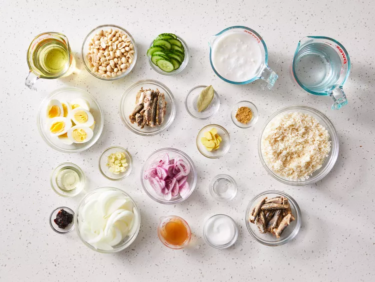
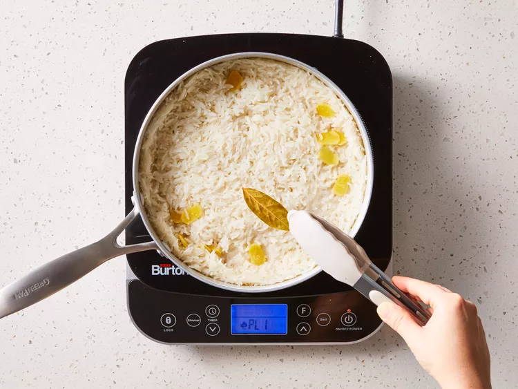
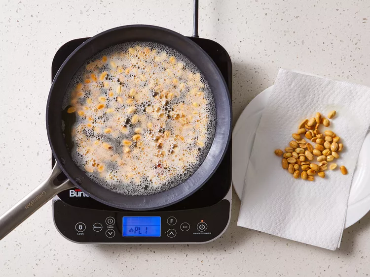
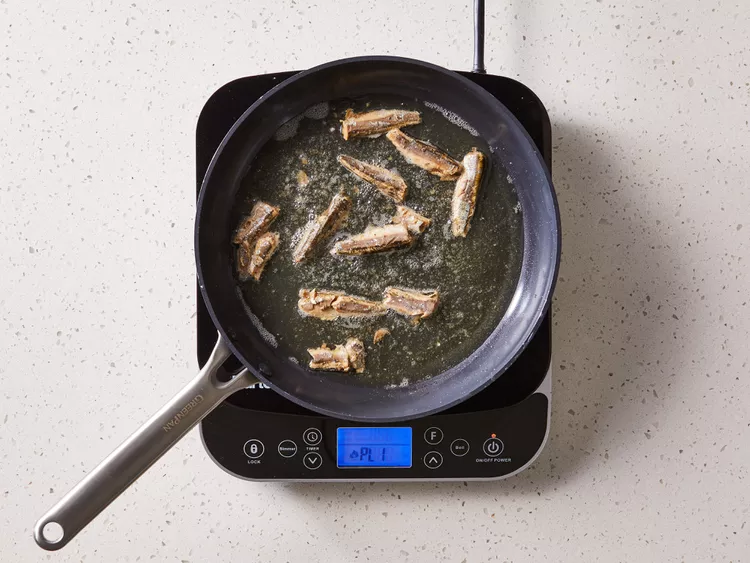
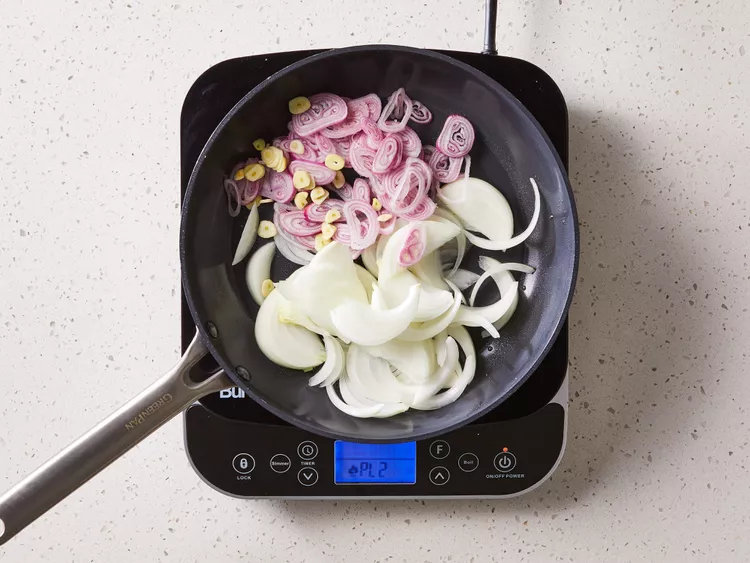
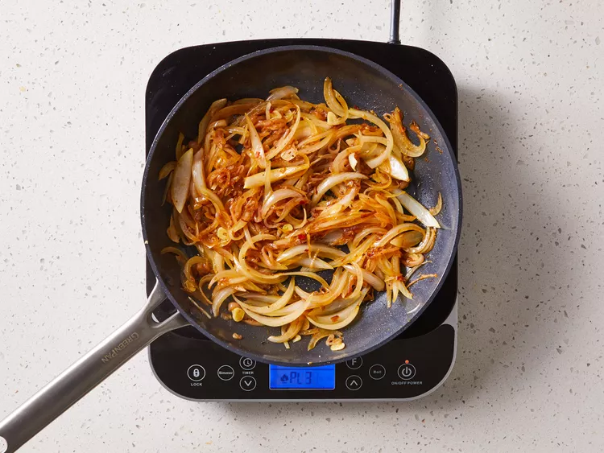
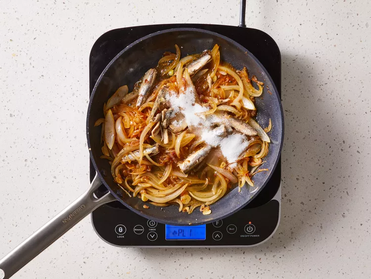
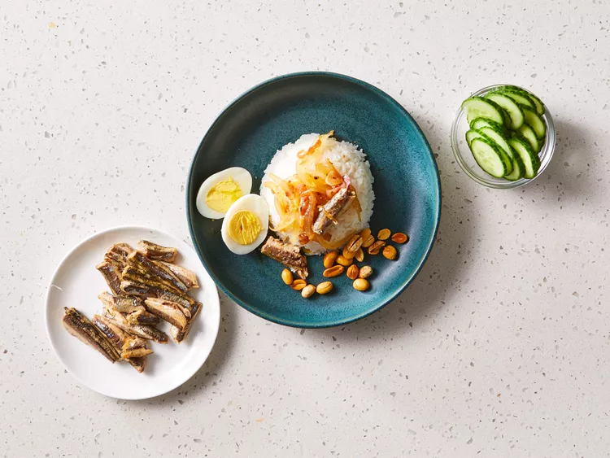

Here's an estimated overview of effort required
Prep Time: 30 mins
Cook Time: 30 mins
Total Time: 1 hr
Servings:8
Here's what you need to do
INGREDIENTS
2 cups coconut milk
2 cups water
2 cups long grain rice, rinsed and drained
1 (1/2 inch) piece fresh ginger, peeled and thinly sliced
¼ teaspoon ground ginger
1 whole bay leaf
salt to taste
Garnish:
1 cup oil for frying
1 cup raw peanuts
1 (4 ounce) package white anchovies, washed
4 large hard-boiled eggs, peeled and halved
1 medium cucumber, sliced
Sauce:
2 tablespoons vegetable oil
1 medium onion, sliced
3 medium shallots, thinly sliced
3 cloves garlic, thinly sliced
2 teaspoons chile paste
1 tablespoon water, or more as needed (Optional)
1 (4 ounce) package white anchovies, washed
¼ cup tamarind juice
3 tablespoons white sugar
salt to taste
STEP1
Gather all ingredients.
STEP2
Make the rice: Stir coconut milk, water, rice, fresh ginger, ground ginger, bay leaf, and salt together in a medium saucepan.
STEP3
Cover and bring to a boil over medium heat. Reduce the heat and simmer until tender, 20 to 30 minutes. Discard bay leaf and keep rice warm until garnish and sauce are ready.
STEP4
While the rice is cooking, make the garnish: Heat 1 cup vegetable oil in a large skillet over medium-high heat. Stir in peanuts and cook briefly, until lightly browned. Remove peanuts with a slotted spoon and place onto paper towels to soak up excess grease.
STEP5
Return the skillet to the stove. Stir in anchovies and cook, turning occasionally, until crisp, 2 to 3 minutes. Remove with a slotted spoon and place on paper towels. Discard oil and wipe out the skillet.
STEP6
Make the sauce: Heat oil in the clean skillet. Stir in onion, shallots, and garlic; cook until fragrant, 1 to 2 minutes.
STEP7
Mix in chile paste and cook for 10 minutes, stirring occasionally; if mixture is too dry, add water as needed.
STEP8
Stir in anchovies and cook for 5 minutes. Stir in tamarind juice, sugar, and salt; simmer until sauce is thick, about 5 minutes.
STEP9
Ladle warm rice into bowls. Top with warm sauce, then top with peanuts, fried anchovies, hard-boiled eggs, and cucumber.
RECIPE TIPS
If you don't have tamarind juice, use the same amount of lemon juice as a substitute.
We have determined the nutritional value of oil for frying based on a retention value of 10% after cooking. Amount will vary depending on cooking time and temperature, ingredient density, and specific type of oil used.